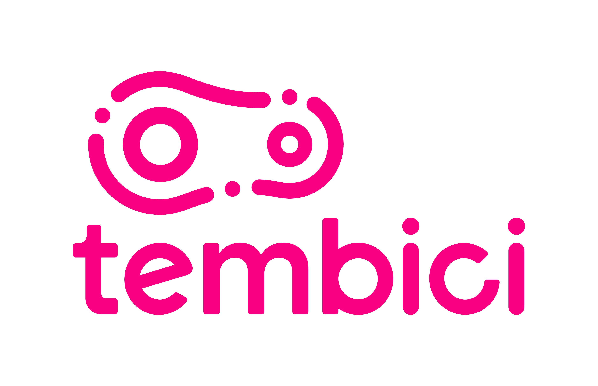

<div class="navbar navbar-default  navbar-fixed-top" role="navigation">
  <div class="container">
    <div class="navbar-header">
      
      <!-- Logo Tembici à esquerda -->
      
      
      <!-- Configuração do Menu para mobile -->
      <button type="button" class="navbar-toggle collapsed" data-toggle="collapse" data-target="#navbar">
        <span class="icon-bar"></span>
        <span class="icon-bar"></span>
        <span class="icon-bar"></span>
      </button>
      
      <a class="navbar-brand"> 
      &nbsp; &nbsp; <strong> Analytics Report</strong> 
      &nbsp;   <span style = "font-size: 11px;"><i>by Data Labs</i></span></a>
    
    </div>
    

   

    <div id="navbar" class="navbar-collapse collapse">
      <ul class="nav navbar-nav">
        <li class="dropdown-header"> </li>
        
        <!-- Se desejar incluir links na nav bar, este é o local 
        <li>
         <a href="index.html">Index</a>
        </li>
        -->
        
      </ul>
    
      <ul class="nav navbar-nav navbar-right">
        <li>
        </li>
      </ul>
      
    </div><!--/.nav-collapse -->
  </div><!--/.container -->
</div><!--/.navbar -->


